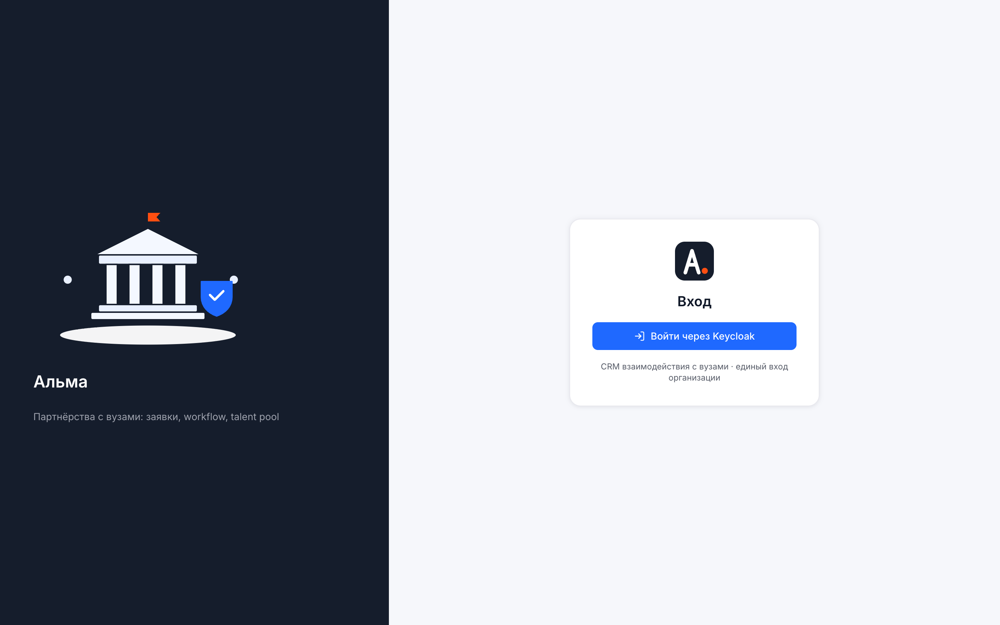
Демонстрационный стенд системы доступен по адресу: https://crm.168-113-158-10.nip.io. Вход выполняется через единый центр аутентификации (Keycloak): нажмите «Войти», введите логин и пароль демо-пользователя — после входа вы автоматически вернётесь в систему с правами выбранной роли.
Для всех демо-учётных записей используется единый пароль: Demo2026!
| Логин | Роль | Что видит и может |
|---|---|---|
admin@demo | Администратор | Полный доступ: пользователи, правила уведомлений, согласование процессов, мониторинг интеграций, журнал аудита, импорт. |
head@demo | Руководитель | Все заявки и аналитика по обеим воронкам, назначение ответственных, редактирование процессов, экспорт отчётов, эскалации. |
kam1@demo | Менеджер (КАМ) | Работа со своими заявками на доске заявок: переводы по статусам, комментарии, файлы, карточки вузов и студентов. |
kam2@demo | Менеджер (КАМ) | Аналогично kam1@demo — второй менеджер для проверки разграничения зон ответственности и переназначений. |
observer@demo | Наблюдатель | Доступ «только чтение»: аналитика, доска и карточки без права изменений — режим для проверяющих и заказчика. |
https://crm.168-113-158-10.nip.io и войдите как head@demo — эта роль показывает систему полнее всего.admin@demo, чтобы увидеть раздел администрирования и настройку уведомлений.head@demo и kam1@demo: переводы заявок менеджером мгновенно отражаются у руководителя.
Аналитическая панель — стартовый экран системы. Она показывает состояние воронок B2B и B2C в реальном времени: количество и суммы заявок по статусам, конверсию между этапами, распределение по менеджерам и динамику за период. Руководитель видит картину по всей команде, менеджер — по своей зоне ответственности.
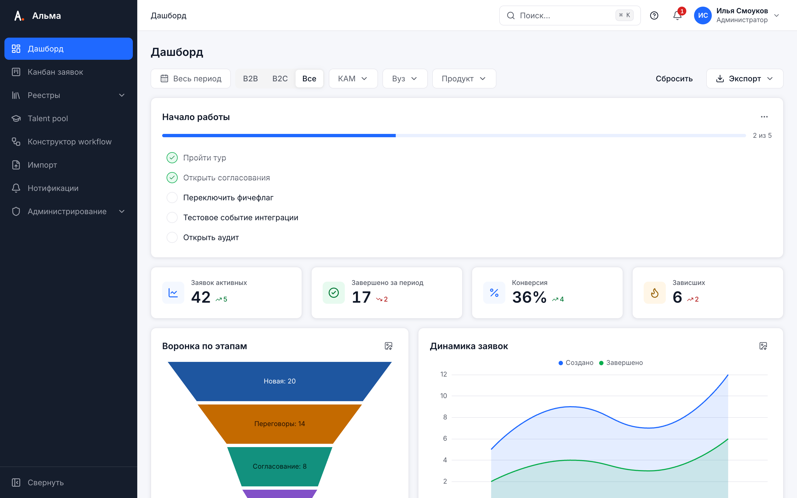
Доска заявок — основной рабочий инструмент менеджера. Колонки соответствуют статусам бизнес-процесса, карточки — заявкам. Переключатель B2B/B2C меняет воронку: партнёрские договоры с вузами или заявки студентов. Каждая воронка использует собственный настраиваемый процесс (см. раздел 5).
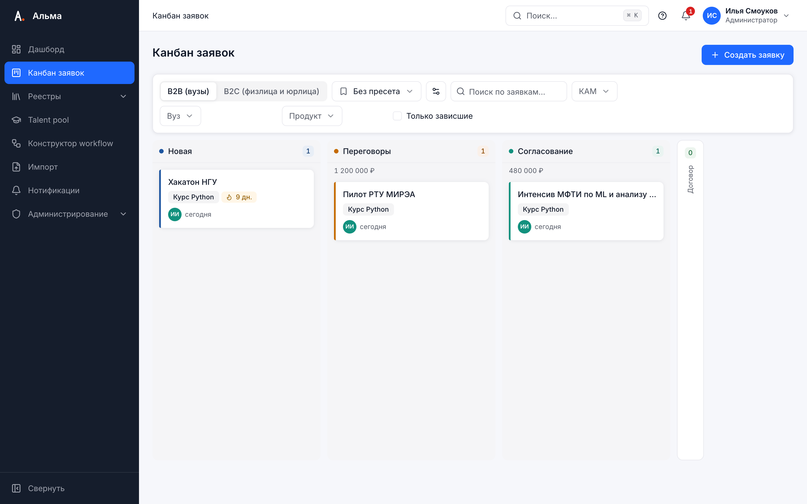
Карточка — досье заявки: все данные, действия и коммуникация в одном месте. Открывается кликом по карточке на доске или из списка детализации аналитической панели.
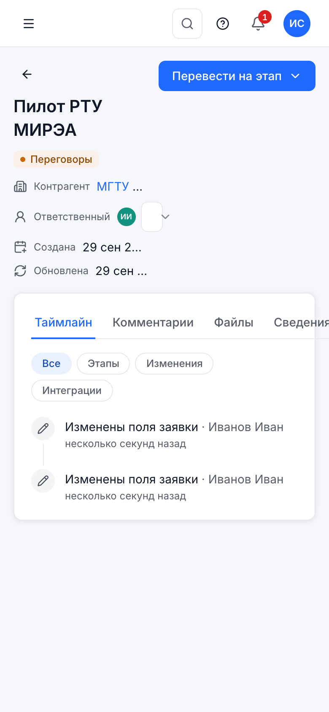
Конструктор позволяет изменять воронки B2B и B2C без программиста: добавлять и переименовывать статусы, настраивать допустимые переходы и правила. Изменения готовятся в черновике и применяются к «боевому» процессу только после явного подтверждения — работа команды не прерывается.
Конструктор не позволит применить некорректную схему: статус без входящих переходов, воронку без конечного статуса, удаление статуса без миграции находящихся в нём заявок, а также цикл, из которого нельзя дойти до завершения. Ошибки подсвечиваются прямо на схеме с пояснением, что нужно исправить. Пока черновик не применён, команда продолжает работать по прежнему процессу.
Импорт переносит в «Альму» исторические данные из таблиц и выгрузок других систем: вузы, договоры, заявки, платежи. Поддерживаются форматы XLSX, XLS, CSV и JSON. Мастер импорта проводит вас за четыре шага: загрузка файла → маппинг колонок → проверка → результат, — и не даёт «испортить» базу: ошибочные строки отклоняются с точным указанием причины.
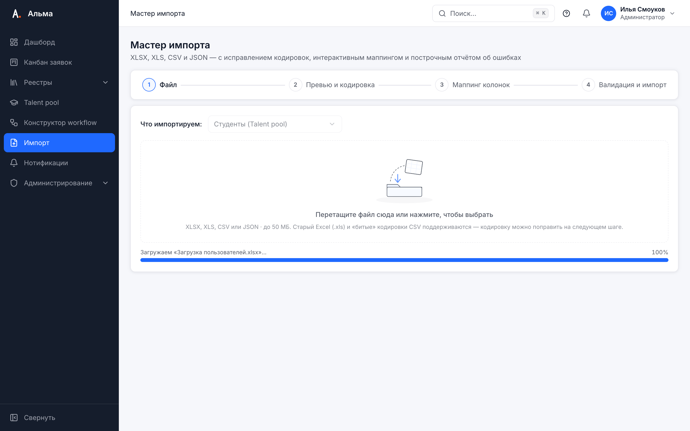
Сопоставьте колонки файла полям системы. Очевидные совпадения («Название», «ИНН», «Сумма») мастер предлагает автоматически — их достаточно подтвердить. Незамапленные колонки можно пропустить.
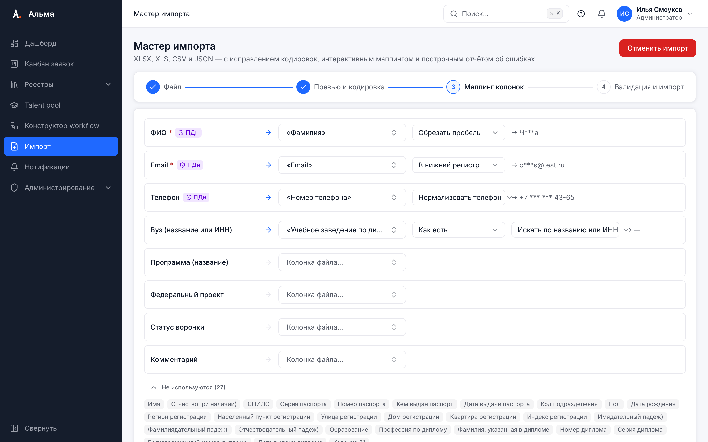
Перед записью система проверяет каждую строку: обязательные поля, форматы дат и чисел, дубликаты. Ошибочные строки не блокируют импорт целиком — корректные данные загружаются, а по каждой отклонённой строке выводится её номер и причина отказа.
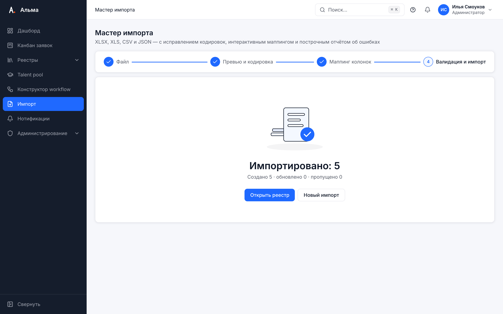
Пул талантов — воронка работы со студентами: от первого контакта на карьерном мероприятии до оффера. Карточки студентов движутся по этапам так же, как заявки на доске заявок. Раздел спроектирован с учётом требований 152-ФЗ: персональные данные студентов по умолчанию замаскированы.
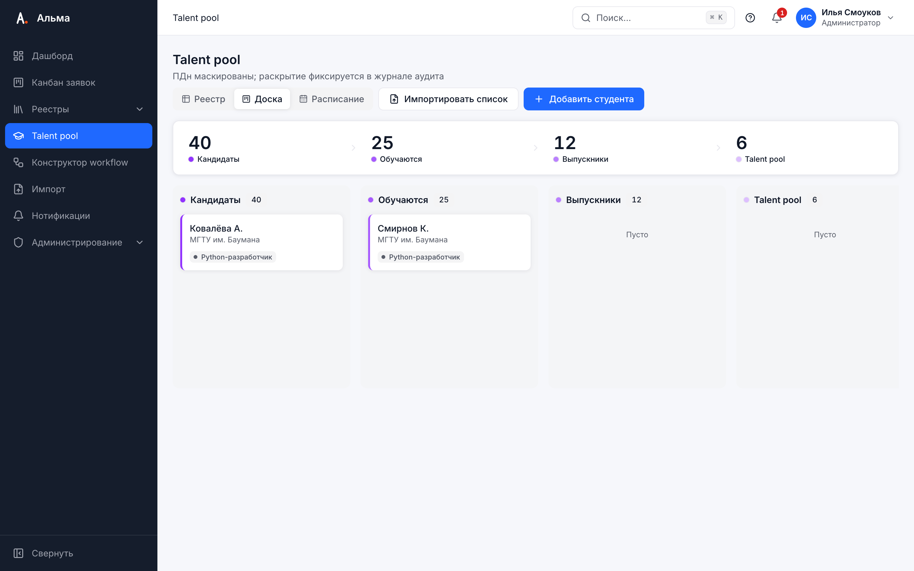
«Альма» уведомляет о событиях по заявкам в двух каналах: колокольчик внутри системы и Telegram-бот @collabse_alma_crm_bot. Уведомления адресуются ответственному по заявке; администратор может дополнительно настроить правила на роль — например, чтобы руководитель получал все переходы (см. раздел 9).
| Команда | Что делает |
|---|---|
/my | Список ваших активных заявок со статусами и сроками. |
/stuck | «Зависшие» заявки — те, что дольше нормы находятся в одном статусе и требуют внимания. |
/summary | Краткая сводка за день: новые заявки, переходы, просрочки. |
Если заявка находится в статусе дольше допустимого срока, система формирует эскалацию: уведомление получает не только ответственный менеджер, но и руководитель. Пороговые сроки задаются в правилах процесса. Эскалации видны и в боте (команда /stuck), и в колокольчике системы.
Раздел доступен роли «Администратор» (admin@demo) и объединяет управление пользователями, правилами уведомлений, согласованием процессов и контролем работоспособности системы.
Создание и блокировка учётных записей, назначение ролей (администратор, руководитель, менеджер, наблюдатель), привязка менеджеров к зонам ответственности. Учётные записи синхронизированы с Keycloak.
Гибкая настройка: какое событие, кому и в какой канал доставлять. По умолчанию уведомления получает ответственный по заявке.
Рецепт «получать все переходы». Чтобы руководитель видел каждый переход заявок по воронке: «Администрирование → Правила уведомлений → Добавить правило», событие — «Смена статуса», получатель — роль «Руководитель» (а не конкретный пользователь), канал — Telegram и/или колокольчик. Правило на роль охватывает все заявки независимо от ответственного.
Черновики бизнес-процессов, отправленные из конструктора «на применение», попадают в очередь согласования. Администратор видит диф изменений и план миграции заявок, после чего применяет или отклоняет черновик с комментарием.
Статус внешних связок системы — Telegram-бот, центр аутентификации, фоновые задачи: время последнего успешного обмена и ошибки доставки. Если канал «покраснел», начните диагностику отсюда.
Неизменяемая запись значимых действий: входы, смены статусов, изменения процессов, импорты и раскрытия персональных данных в пуле талантов (кто, что, когда). Поддерживает фильтры по пользователю, типу события и периоду.
При первом входе система запускает короткий вводный тур: серия подсказок проводит по ключевым разделам — доска, карточка, аналитика, уведомления. Тур можно пропустить и запустить повторно из меню профиля («Помощь → Пройти тур»).
Интерфейс адаптирован для смартфона: доска, карточки заявок и аналитическая панель работают в мобильном браузере без установки приложений. Менеджер на выезде в вузе может перевести заявку по статусу и оставить комментарий прямо со встречи.
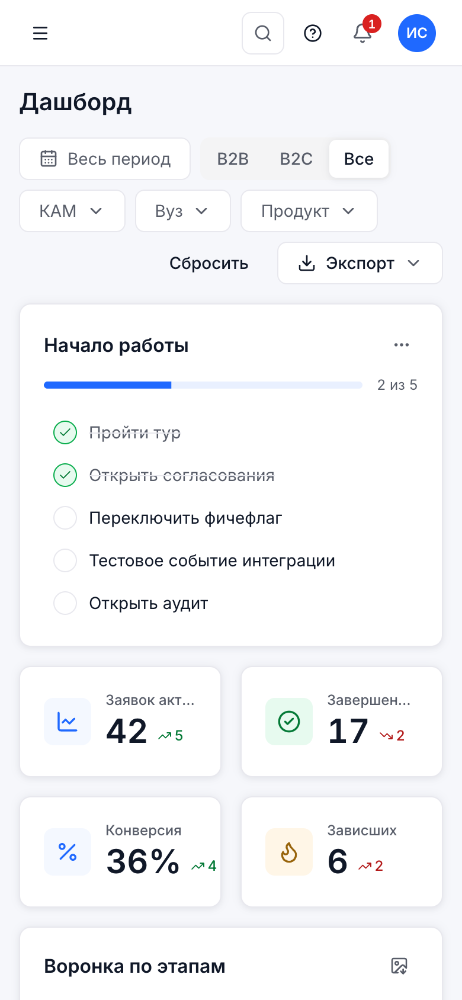
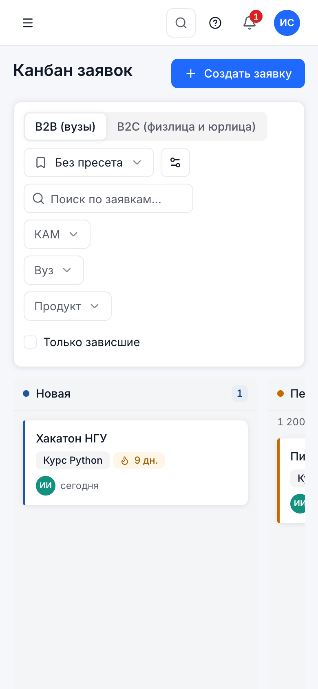
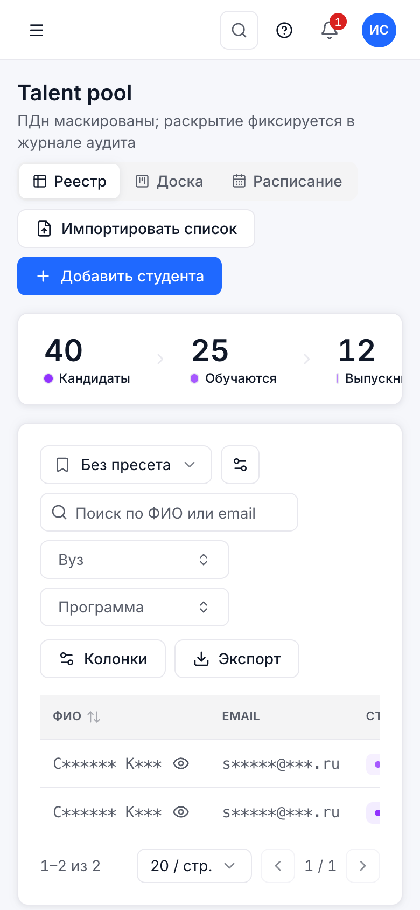
Раздел для администраторов стенда. Аутентификация «Альмы» построена на Keycloak: пользователи, роли и сессии управляются в его административной консоли. Для повседневной работы с CRM консоль не нужна — она требуется только для обслуживания стенда.
https://id.crm.168-113-158-10.nip.io/admin/master/console/admin.# выполняется по SSH на сервере стенда (замените ВАШ_СЕРВЕР на адрес хоста)
ssh root@ВАШ_СЕРВЕР 'k3s kubectl get secret crm-keycloak-admin -n crm \
-o go-template={{.data.password}} | base64 -d'
Команда выводит пароль администратора Keycloak в терминал. Не сохраняйте значение в файлах и чатах — извлекайте его из секрета при необходимости.
admin. Пользователи CRM (admin@demo, kam1@demo и другие) живут в realm crm — чтобы управлять ими, войдите в консоль master и переключите realm на «crm» в левом верхнем меню. Попытка войти в консоль master под admin@demo (или на форму realm crm под admin) закончится ошибкой «Invalid username or password» — это ожидаемое поведение, а не сбой.
Уведомления по умолчанию адресуются ответственному по заявке. Если заявку перевёл другой сотрудник, а вы не назначены ответственным — уведомление вам не положено, это штатное поведение.
Что проверить: 1) вы — ответственный по заявке (поле «Ответственный» в карточке); 2) Telegram привязан и бот подтвердил привязку (раздел 8); 3) если уведомления нужны по всем заявкам — попросите администратора создать правило на роль: «Администрирование → Правила уведомлений → событие "Смена статуса" → получатель — роль» (рецепт в разделе 9).
Код привязки одноразовый и действует 10 минут. Если бот отвечает, что код недействителен, — сгенерируйте новый: «Профиль → Уведомления → Привязать Telegram», и отправьте свежий код боту @collabse_alma_crm_bot в течение 10 минут. Старые коды аннулируются автоматически.
Доска разрешает только переходы, предусмотренные бизнес-процессом. Если целевая колонка недоступна — переход не описан в процессе либо требует промежуточного шага. Схему переходов можно посмотреть в разделе «Процессы»; изменить её вправе руководитель через конструктор (раздел 5).
Это маскирование ПДн в пуле талантов (раздел 7). Нажмите «Показать» в карточке студента — данные раскроются на 60 секунд, факт раскрытия попадёт в журнал аудита. Постоянного отображения ПДн в списках нет по требованиям защиты данных.
Изменения живут в черновике, пока вы не нажмёте «Отправить на применение» и администратор не согласует их (разделы 5 и 9). Проверьте статус черновика в конструкторе и очередь апрувов у администратора.
Команда Collabse · ЛЦТ 2026 · Стенд: crm.168-113-158-10.nip.io